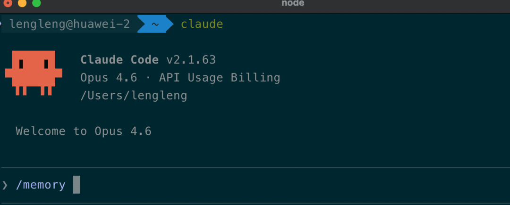
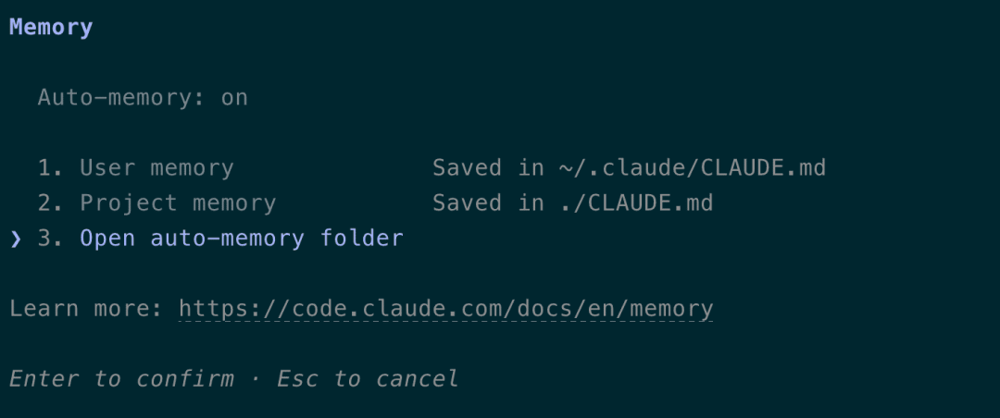

Anthropic 最近的版本推出了新的会话记忆功能：Auto Memory。
Claude Code 现在会自己记笔记了。你不用动手，它会把项目里值得留下来的东西（构建命令、代码习惯、架构约定、调试经验）自动写进本地文件。下次不管你开哪个终端、开第几个会话，这些信息都会自动加载。
Claude Code 是什么
先说背景。如果你还没用过 Claude Code，简单介绍一下。
Claude Code 是 Anthropic 推出的命令行 AI 编程工具。和 IDE 插件不同，它直接跑在终端里，能读写文件、执行命令、跑测试，甚至帮你提交代码。
# 安装
curl -fsSL https://claude.ai/install.sh | bash
# 在项目目录下启动
cd your-spring-boot-project
claude启动之后，你可以用自然语言跟它交互。比如"帮我写一个用户注册接口"、"这个 NullPointerException 怎么回事"、"把这个 Service 重构成策略模式"。
它不是补全工具，更像一个能直接动手改代码的结对编程搭档。
对 Java 开发者来说，最大的优势是它能理解整个项目上下文——不只是当前文件，而是 pom.xml、配置文件、项目结构这些全局信息。
但有个致命问题：它只记得住当前会话的事。
手动维护 CLAUDE.md，累不累？
在 Auto Memory 出现之前，Claude Code 的解决方案是 CLAUDE.md。
思路很简单：在项目根目录放一个 Markdown 文件，写上你想让 Claude 知道的事。每次启动会话，Claude 会自动读取这个文件。
# 项目约定
- 使用 Maven，不要用 Gradle
- Java 17，Spring Boot 3.x
- 测试框架用 JUnit 5 + Mockito
- 提交前必须跑 mvn verify
# 代码风格
- Service 层用接口 + 实现类
- Controller 统一返回 R<T> 包装类
- 异常用全局 @ExceptionHandler 处理这玩意儿管用吗？管用。但有个问题——得你自己写，自己定期维护。
用了两周你会发现，每次 Claude 又"忘了"什么，你就得手动往 CLAUDE.md 里加一行。过时的规则懒得清理，文件越来越长。到后来维护 CLAUDE.md 的时间，比写代码还多。
还有一个更根本的问题：CLAUDE.md 只能写"规则"，写不了"经验"。
Auto Memory：让 AI 自己记笔记

2026 年 2 月底，Claude Code v2.1.59 版本上线了这个功能。核心变化用一句话概括：
以前是"你写规则，Claude 读"。现在多了一层："Claude 自己记笔记，自己读"。
它会记什么
Auto Memory 默认开启，不需要任何配置。你正常写代码的时候，Claude 会悄悄把以下信息写入本地文件：
• 项目模式：构建命令、测试约定、目录结构 • 调试经验：踩过的坑、排查过的问题、解决方案 • 架构笔记：关键文件、模块关系、重要的抽象设计 • 你的偏好：编码习惯、工具选择、工作流程
你也可以主动让它记。比如直接说：
"记住这个项目用 pnpm 不用 npm"
"记住 API 测试前要先启动本地 Redis"
Claude 会把这些写入记忆文件，后续会话自动遵守。
存在哪里
每个项目有独立的记忆目录：
~/.claude/projects/<项目路径>/memory/
├── MEMORY.md # 主索引，每次会话自动加载前200行
├── debugging.md # 调试相关的笔记
├── api-conventions.md # API 设计约定
└── ... # 其他主题文件几个要注意的：
1. 不进 Git。记忆文件只存在你本地，不会被提交到仓库。 2. 按项目隔离。不同 Git 仓库的记忆互不干扰。 3. 有个 200 行限制。每次会话启动时，Claude 只加载 MEMORY.md 的前 200 行。超出的内容会被拆到主题文件里，需要时再按需读取。

CLAUDE.md vs MEMORY.md
两者的关系可以这样理解：
两者并存，互不冲突。会话启动时一起加载。
如果你熟悉 Spring Boot 的配置体系，可以这样理解：CLAUDE.md 像 application.yml 里你手写的配置，MEMORY.md 像 Spring Boot 的自动配置，根据实际情况自动生成，你不用管，但需要时可以覆盖。
怎么用
确认版本
Auto Memory 需要 Claude Code v2.1.59 及以上版本。更新一下：
claude update
claude --version查看记忆状态
在任何 Claude Code 会话中输入：
/memory你会看到这个面板：
Memory
Auto-memory: on
1. User memory Saved in ~/.claude/CLAUDE.md
2. Project memory Checked in at ./CLAUDE.md
3. Open auto-memory folder• 选项 1：打开全局用户记忆（跨项目的个人偏好） • 选项 2：打开项目级 CLAUDE.md（团队共享的规则） • 选项 3：打开 Auto Memory 文件夹（Claude 自己的笔记）
验证记忆是否生效
最简单的验证方式：
1. 启动 Claude Code，做一些实际工作（比如让它帮你写个 Spring Boot 接口） 2. 注意终端里是否出现 Recalled X memories (ctrl+o to expand)的提示3. 按 Ctrl+O 查看加载了哪些记忆 4. 关闭会话，重新打开，问它："你知道这个项目用什么构建工具吗？"
如果它能准确回答，说明记忆生效了。
管理记忆
记忆文件就是普通的 Markdown，你随时可以编辑：
# 直接打开编辑
open ~/.claude/projects/<你的项目>/memory/MEMORY.md
# 或者通过 /memory 命令在编辑器中打开不想用？可以关
有些场景你可能不想让 Claude 记东西。比如临时的探索性工作，或者 CI/CD 环境。
单个项目关闭：
// .claude/settings.json
{
"autoMemoryEnabled": false
}全局关闭：
// ~/.claude/settings.json
{
"autoMemoryEnabled": false
}CI 环境强制关闭：
export CLAUDE_CODE_DISABLE_AUTO_MEMORY=1环境变量的优先级最高，会覆盖所有配置。
记忆层级：从全局到局部
Claude Code 的记忆体系其实不只是 CLAUDE.md + MEMORY.md。完整的层级结构长这样：
./CLAUDE.md | |||
./.claude/rules/*.md | |||
~/.claude/CLAUDE.md | |||
./CLAUDE.local.md | |||
~/.claude/projects/<项目>/memory/ |
越具体的层级，优先级越高。
总结
用了这几天之后，最直接的感受就是：新开会话的"冷启动"快多了。以前每次要花几分钟重新介绍昨天开发进度背景，现在 Claude 开口就能说出你昨天的进度，甚至上次没解决的那个 Bug。